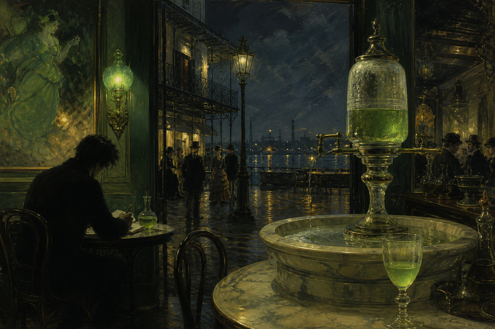

The essay
“Absinthe: The Green Goddess”
Crowley’s essay appeared in The International in February 1918. He wrote it in New Orleans, at the Old Absinthe House, and later described it in The Confessions of Aleister Crowley as his best essay.
“What is there in absinthe that makes it a separate cult?”
That question is the essay’s organizing problem. Crowley is not trying to prove that absinthe contains a secret hallucinogen. He is asking why the drink has acquired a separate mythology, etiquette, vocabulary, and emotional atmosphere.
Crowley’s reasoning
How the argument works
Begin with the ritual
The water, glass, spoon, dilution, and waiting turn drinking into a small ceremony rather than a quick dose of alcohol.
Make the drink a person
“The Green Goddess” gives the liquid agency and personality. The drink becomes a presence one encounters, not merely a substance one consumes.
Read the herbs symbolically
Melissa, mint, anise, fennel, hyssop, marjoram, angelica, and dittany become a sacred botanical architecture. Their occult meanings matter more to him than a laboratory assay.
Turn intoxication into a threshold
Absinthe loosens ordinary attention and invites artistic or metaphysical interpretation—but the altered state must still be judged, shaped, and eventually left behind.
Keep the danger in the picture
The Green Goddess is attractive precisely because she is not harmless. Beauty, degradation, seduction, and self-command remain in tension.
The central insight
Absinthe as a test of vocation
Crowley’s most interesting move is that he refuses to let ecstasy be the final goal. The artist may enter the atmosphere of the drink, glimpse a wider reality, and feel the world become unusually vivid—but must return to work. The experience is valuable only if it becomes perception, language, or action.
In that sense, Crowley’s “Green Goddess” is less a claim about thujone than a model of artistic consciousness: ritual creates attention, attention creates symbolic meaning, and symbolic meaning has to be carried back into ordinary life.
Read the full 1918 essay
Transcribed from the five-page scan of The International, vol. XII, no. 2, February 1918, pp. 47–51. Spelling and punctuation are lightly normalized where the scan is visibly damaged. The poem beginning “At the Feet of Our Lady of Darkness” follows the essay in the issue but is a separate work and is not included here.
I.
Keep always this dim corner for me, that I may sit while the Green Hour glides, a proud pavane of Time. For I am no longer in the city accursed, where Time is horsed on the white gelding Death, his spurs rusted with blood.
There is a corner of the United States which he has overlooked. It lies in New Orleans, between Canal street and Esplanade avenue; the Mississippi for its base. Thence it reaches northward to a most curious desert land, where is a cemetery lovely beyond dreams, its walls low and whitewashed, within which straggles a wilderness of strange and fantastic tombs: and hard by is that great city of brothels which is so cynically mirthful a neighbor. As Félicien Rops wrote—or was it Edmond d’Haraucourt?—la Prostitution et la Mort sont frère et soeur—les fils de Dieu! At least the poet of La Légende des Sexes was right, and the psycho-analysts after him, in identifying the Mother with the Tomb. This, then, is only the beginning and end of things, this “quartier macabre” beyond the North Rampart; and the Mississippi on the other side is like the space between, our life which flows, and fertilizes as it flows, muddy and malarious as it may be, to empty itself into the warm bosom of the Gulf Stream, which (in our allegory) we may call the Life of God.
But our business is with the heart of things; we must go beyond the crude phenomena of nature if we are to dwell in the spirit. Art is the soul of life; and the Old Absinthe House is heart and soul of the old quarter of New Orleans.
For here was the headquarters of no common man—no less than a real pirate—of Captain Lafitte, who not only robbed his neighbors, but defended them against invasion. Here, too, sat Henry Clay, who lived and died to give his name to a cigar. Outside this house no man remembers much more of him than that; but here, authentic and, as I imagine, indignant, his ghost stalks grimly.
Here, too, are marble basins hollowed—and hallowed!—by the drippings of the water which creates by baptism the new spirit of absinthe.
I am only sipping the second glass of that “fascinating, but subtle poison, whose ravages eat men’s heart and brain” that I have ever tasted in my life; and as I am not an American anxious for quick action, I am not surprised and disappointed that I do not drop dead upon the spot. But I can taste souls without the aid of absinthe; and besides, this is magic absinthe! The spirit of the house has entered into it; it is an elixir, the masterpiece of an old alchemist, no common wine.
And so, as I talk with the patron concerning the vanity of things, I perceive the secret of the heart of God himself, this, that everything, even the vilest thing, is so unutterably lovely that it is worthy of the devotion of a God for all eternity.
What other excuse could He give man for making him? In substance, that is my answer to King Solomon.
II.
The barrier between divine and human things is frail but inviolable; the artist and the bourgeois are only divided by a point of view. “A hair divides the false and true.”
I am watching the opalescence of my absinthe, and it leads me to ponder upon a certain very curious mystery, persistent in legend. We may call it the mystery of the rainbow.
Originally, in the fantastic but significant legend of the Hebrews, the rainbow is mentioned as the sign of salvation. The world had been purified by water, and was ready for the revelation of Wine. God would never again destroy his work, but ultimately seal its perfection by a baptism of fire.
Now, in this analogue also falls the coat of many colors which was made for Joseph, a legend which was regarded as so important that it was subsequently borrowed for the romance of Jesus. The veil of the Temple, too, was of many colors. We find, further east, that the Manipura Cakkra—the Lotus of the City of Jewels—which is an important centre in Hindu anatomy, and apparently identical with the solar plexus, is the central point of the nervous system of the human body, dividing the sacred from the profane, or the lower from the higher.
In western Mysticism, once more we learn that the middle grade of initiation is called Hodos Camelionis, the Path of the Cameleon; there is here evidently an allusion to this same mystery. We also learn that the middle stage in Alchemy is when the liquor becomes opalescent.
Finally, we note among the visions of the Saints one called the Universal Peacock, in which the totality of things is perceived thus royally apparelled.
Would it were possible to assemble in this place the cohorts of quotation; for indeed they are beautiful with banners, flashing their myriad rays from cothurn and habergeon, gay and gallant in the light of that Sun which knows no fall from Zenith of high noon!
Yet I must needs already have written so much to make clear one pitiful conceit: can it be that in the opalescence of absinthe is some occult link with this mystery of the Rainbow? For undoubtedly one glass does indefinably and subtly insinuate the drinker within the secret chamber of Beauty, does kindle his thoughts to rapture, adjust his point of view to that of the artist, at least in that degree of which he is originally capable, weave for his fancy a gala dress of stuff as many-coloured as the mind of Aphrodite.
Oh Beauty! Long did I love thee, long did I pursue thee, thee elusive, thee intangible! And lo! thou enfoldest me by night and day in the arms of gracious, of luxurious, of shimmering silence.
III.
The Prohibitionist must always be a person of no moral character; for he cannot even conceive of the possibility of a man capable of resisting temptation. Still more, he is so obsessed, like the savage, by the fear of the unknown, that he regards alcohol as a fetich, necessarily alluring and tyrannical.
With this ignorance of human nature goes an even grosser ignorance of the divine nature.
He does not understand that the universe has only one possible purpose; that, the business of life being happily completed by the production of the necessities and luxuries incidental to comfort, the residuum of human energy needs an outlet. The surplus of Will must find issue in the elevation of the individual towards the godhead; and the method of such elevation is by religion, love, and art. Now these three things are indissolubly bound up with wine, for they are themselves species of intoxication.
Yet against all these things we find the prohibitionist, logically enough. It is true that he usually pretends to admit religion as a proper pursuit for humanity; but what a religion! He has removed from it every element of ecstasy or even of devotion; in his hands it has become cold, fanatical, cruel, and stupid, a thing merciless and formal, without sympathy or humanity. Love and art he rejects altogether; for him the only meaning of love is a mechanical—hardly even physiological!—process necessary for the perpetuation of the human race. (But why perpetuate it?) Art is for him the parasite and pimp of love; he cannot distinguish between the Apollo Belvedere and the crude bestialities of certain Pompeian frescoes, or between Rabelais and Elinor Glyn.
What then is his ideal of human life? One cannot say. So crass a creature can have no true ideal. There have been ascetic philosophers; but the prohibitionist would be as offended by their doctrine as by ours. These, indeed, are not so dissimilar as appears. Wage-slavery and boredom seem to complete his outlook on the world.
There are species which survive because of the feeling of disgust inspired by them; one is reluctant to set the heel firmly upon them, however thick may be one’s boots. But when they are recognized as utterly noxious to humanity—the more so that they ape its form—then courage must be found, or, rather, nausea must be swallowed.
May God send us a Saint George!
IV.
It is notorious that all genius is accompanied by vice. Almost always this takes the form of sexual extravagance. It is to be observed that deficiency, as in the cases of Carlyle and Ruskin, is to be reckoned as extravagance. At least, the word abnormality will fit all cases. Further, we see that in a very large number of great men there has also been indulgence in drink or drugs. There are whole periods when practically every great man has been thus marked; these periods are those during which the heroic spirit has died out of their nation, and the bourgeois is apparently triumphant.
In this case the cause is evidently the horror of life induced in the artist by the contemplation of his surroundings. He must find another world, no matter at what cost.
Consider the end of the eighteenth century. In France, at that time, the men of genius were made, so to speak, possible, by the Revolution. In England, under Castlereagh, we find Blake lost to humanity in mysticism, Shelley and Byron exiles, Coleridge taking refuge in opium, Keats sinking under the weight of circumstance, Wordsworth forced to sell his soul, while the enemy, in the persons of Southey and Moore, triumphantly holds sway.
The poetically similar period in France is 1850 to 1870. Hugo is in exile, and all his brethren are given to absinthe or to hashish or to opium.
There is however another consideration more important. There are some men who possess the understanding of the City of God, and know not the keys; or, if they possess them, have not force to turn them in the wards. Such men often seek to win heaven by forged credentials. Just so a youth who desires love is too often deceived by simulacra, embraces Lydia thinking her to be Lalage.
But the greatest men of all suffer neither the limitations of the former class nor the illusions of the latter. Yet we find them equally given to what is apparently indulgence. Lombroso has foolishly sought to find the source of this in madness—as if insanity could scale the peaks of Progress while Reason recoiled from the bergschrund. The explanation is far otherwise. Imagine to yourself the mental state of him who inherits or attains the full consciousness of the artist, that is to say, the divine consciousness.
He finds himself unutterably lonely, and he must steel himself to endure it. All his peers are dead long since! Even if he find an equal upon earth, there can scarcely be companionship, hardly more than the far courtesy of king to king. There are few twin souls in genius—rare even as twin stars.
Good—he can reconcile himself to the scorn of the world. But yet he feels with anguish his duty towards it. It is therefore essential to him to be human.
Now the divine consciousness is not full-flowered in youth. The newness of the objective world preoccupies the soul for many years. It is only as each illusion vanishes before the magic of the master that he gains more and more the power to dwell in the world of Reality. And with this comes the terrible temptation—the desire to enter and enjoy rather than remain among men and suffer their illusions. Yet, since the sole purpose of the incarnation of such Master was to help humanity, he must make the supreme renunciation. It is the problem of that dreadful bridge of Islam, Al Sirak; the razor-edge will cut the unwary foot, yet it must be trodden firmly, or the traveler will fall to the abyss. I dare not sit in the Old Absinthe House for ever, wrapped in the ineffable delight of the Beatific Vision. I must write this essay, that men may thereby come at last to understand true things. But the operation of the creative godhead is not enough. Art is itself too near the Reality which must be renounced for a season.
Therefore his work is also part of his temptation; the genius feels himself slipping constantly heavenward. The gravitation of eternity draws him. He is like a ship torn by the tempest from the harbour where the master must needs take on new passengers to the Happy Isles. So he must throw out anchors; and the only holding is the mire! Thus, in order to maintain the equilibrium of sanity, the artist is obliged to seek fellowship with the grossest of mankind. Like Lord Dunsany or Augustus John, today, or like Teniers of old, he may love to sit in taverns where sailors frequent, he may wander the country with gypsies, or he may form liaisons with the vilest men and women. Edward Fitzgerald would seek an illiterate fisherman, and spend weeks in his company; Verlaine made associates of Rimbaud and Bibi la Purée, Shakespeare consorted with the Earls of Pembroke and Southampton; Marlowe was actually killed during a brawl in a low tavern. And when we consider the sex-relation, it is hard to mention a genius who had a wife or mistress of even tolerable good character. If he had one, he would be sure to neglect her for a Vampire or a Shrew. A good woman is too near that heaven of Reality which he is sworn to renounce!
And this, I suppose, is why I am interested in the woman who has come to sit at the nearest table. Let us find out her story; let us try to see with the eyes of her soul!
V.
She is a woman of no more than thirty years of age, though she looks older. She comes here at irregular intervals, once a week or once a month; but when she comes she sits down to get solidly drunk on that alternation of beer and gin which the best authorities in England deem so efficacious.
As to her story, it is simplicity itself. She was kept in luxury for some years by a wealthy cotton broker, crossed to Europe with him, and lived in London and Paris like a queen. Then she got the idea of “respectability” and “settling down in life”; so she married a man who could keep her in mere comfort. Result: repentance, and a periodical need to forget her sorrows. She is still “respectable”; she never tires of repeating that she is not one of “those girls,” but “a married woman living far up-town,” and that she “never runs about with men.”
It is not the failure of marriage; it is the failure of men to recognize what marriage was ordained to be. By a singular paradox, it is the triumph of the bourgeois, who is the chief supporter of marriage, that has degraded marriage to the level of the bourgeois. Only the hero is capable of marriage as the church understands it; for the marriage oath is a compact of appalling solemnity, an alliance of two souls against the world and against fate, with invocation of the great aid of the Most High. Death is not the most beautiful of adventures, as Charles Frohman said on the “Titanic” ere she plunged, for death is unavoidable; marriage is a voluntary heroism. That marriage has today become a matter of convenience is the last word of the commercial spirit. It is as if one should take a vow of knighthood to combat dragons—until the dragons appeared.
So this poor woman, because she did not understand that respectability is a lie, that it is love that makes marriage sacred and not the sanction of church or state, because she took marriage as an asylum instead of as a crusade, has failed in life, and now seeks alcohol under the same fatal error.
Wine is the ripe gladness which accompanies valor and rewards toil; it is the plume on a man’s lance-head, a fluttering gallantry—not good to lean upon. Therefore her eyes are glassed with horror as she gazes uncomprehending upon her fate. That which she did all to avoid confronts her; she does not realize that, had she faced it, it would have fled with all the other phantoms. For the sole reality of this universe is God.
The Old Absinthe House is not a place; it is not bounded by four walls; it is headquarters of an army of philosophies. From this dim corner let me range, wafting thought through every air, salient against every problem of mankind; for it will always return like Noah’s dove to this ark, this strange little sanctuary of the Green Goddess which has been set down not upon Ararat, but by the banks of the “Father of Waters.”
VI.
Ah! the Green Goddess! What is the fascination that makes her so adorable and so terrible? Do you know that French sonnet “La légende de l’absinthe?” He must have loved it well, that poet. Here are his witnesses:
Apollon, qui pleurait le trépas d’Hyacinthe,
Ne voulait pas céder la victoire à la mort.
Il fallait que son âme, adepte de l’essor,
Trouvât pour la beauté une alchimie plus sainte.
Donc, de sa main céleste il épuise, il éreinte
Les dons les plus subtils de la divine Flore.
Leurs corps brisés soupirent une exhalaison d’or
Dont il nous recueillait la goutte de—“Absinthe!”
Aux cavernes blotties, aux palais pétillants,
Par un, par deux, buvez ce breuvage d’aimant!
Car c’est un sortilège, un propos de dictame,
Ce vin d’opale pâle avortit la misère,
Ouvre de la beauté l’intime sanctuaire
—Ensorcelle mon cœur, extasie mon âme!
What is there in absinthe that makes it a separate cult? The effects of its abuse are totally distinct from those of other stimulants. Even in ruin and in degradation it remains a thing apart; its victims wear a ghastly aureole all their own, and in their peculiar hell yet gloat with a sinister perversion of pride that they are not as other men.
But we are not to reckon up the uses of a thing by contemplating the wreckage of its abuse. We do not curse the sea because of occasional disasters to our mariners, or refuse axes to our woodsmen because we sympathize with Charles the First or Louis the Sixteenth. So therefore as special vices and dangers appertain to absinthe, so also do graces and virtues that adorn no other liquor.
The word is from the Greek apsinthion; it means “undrinkable” or, according to some authorities, “undelightful”. In either case, strange paradox? No; for the wormwood draught itself were bitter beyond human endurance; it must be aromatized and mellowed with other herbs.
Chief among these is the gracious Melissa, of which the great Paracelsus thought so highly that he incorporated it as the chief ingredient in the preparation of his Ens Melissa Vitae, which he expected to be an elixir of life and a cure for all diseases, but which in his hands never came to perfection.
Then also there are added mint, anise, fennel and hyssop, all holy herbs familiar to all from the Treasury of Hebrew Scripture. And there is even the sacred marjoram which renders man both chaste and passionate; the tender green angelica stalks also infused in this most mystic of concoctions; for like the Artemisia absinthium itself it is a plant of Diana, and gives the purity and lucidity, with a touch of the madness, of the Moon; and above all there is the Dittany of Crete of which the eastern Sages say that one flower hath more puissance in high magic than all the other gifts of all the gardens of the world. It is as if the first diviner of absinthe had been indeed a magician intent upon a combination of sacred drugs which should cleanse, fortify and perfume the human soul.
And it is no doubt that in the due employment of this liquor such effects are easy to obtain. A single glass seems to render the breathing freer, the spirit lighter, the heart more ardent, soul and mind alike more capable of executing the great task of doing that particular work in the world which the Father may have sent them to perform. Food itself loses its gross qualities in the presence of absinthe, and becomes even as manna, operating the sacrament of nutrition without bodily disturbance.
Let then the pilgrim enter reverently the shrine, and drink his absinthe as a stirrup-cup; for in the right conception of this life as an ordeal of chivalry lies the foundation of every perfection of philosophy, “Whatsoever ye do, whether ye eat or drink, do all to the glory of God!” applies with singular force to the absintheur. So may he come victorious from the battle of life to be received with tender kisses by some green-robed archangel, and crowned with mystic vervain in the Emerald Gateway of the Opal City of God.
VII.
And now the café is beginning to fill up. This little room with its dark green woodwork, its boarded ceiling, its sanded floor, its old pictures, its whole air of sympathy with time, is beginning to exert its magic spell. Here comes a curious child, short and sturdy, with a long blonde pigtail, her slave sly and side-long on a jolly little old man who looks as if he had stepped straight out of the pages of Balzac.
Handsome and diminutive, with a fierce moustache almost as big as the rest of him, like a regular little Spanish fighting cock, Frank, the waiter, in his long white apron, struts to them with the glasses of ice-cold pleasure, green as the glaciers themselves. He will stand up bravely with the musicians by and by, and sing us a jolly song of old Catalonia.
The door swings open again; a tall dark girl, exquisitely slim and snaky, with masses of black hair knotted about her head, comes in; on her arm is a plump woman with hungry eyes, and a mass of Titian red hair. They seem distracted from the outer world, absorbed in some subject of enthralling interest; and they drink their apéritif as if in a dream. I ask the mulatto boy who waits at my table who they are; but he knows only that one is a cabaret dancer, the other the owner of a cotton plantation up river.
At a round table in the middle of the room sits one of the proprietors with a group of friends; he is burly, rubicund, and jolly, the very type of the Shakespearian “Mine host.” Now a party of a dozen merry boys and girls comes in; the old pianist begins to play a dance, and in a moment the whole café is caught up in the music of harmonious motion. Yet still the invisible line is drawn about each soul; the dance does not conflict with the absorption of the two strange women, or with my own mood of detachment.
There is the “little laughing lewd gamine” dressed all in black save for a square white collar; the big jolly blonde Irish girl in the black velvet béret and coat, and the white boots, chatting with two boys in khaki from the border; and the Creole girl in pure white cap-a-pie, with her small piquant face and its round button of a nose, and its curious deep rose flush, and its red little mouth, impudently smiling.
Around these islands seems to flow as a general tide the more stable life of the quarter. Here are honest goodwives seriously discussing their affairs, and heaven only knows if it be love or the price of sugar which engages them so wholly. There are but a few commonplace and uninteresting elements in the café; and these are without exception men. The giant Big Business is a great tyrant; he seizes all the men for slaves, and leaves the women to make shift as best they can for all that makes life worth living.
At the table next me sits an old, old man. He has done great things in his day, they tell me, an engineer, who first found it possible to dig Artesian wells in the Sahara desert. The Legion of Honor glows red in his shabby surtout. He comes here, one of the many wrecks of the Panama Canal, a piece of jetsam cast up by that tidal wave of speculation and corruption. He is of the old type, the thrifty peasantry; and he has his little income from the Rente. He says that he is too old to cross the ocean—and why should he, with the atmosphere of old France to be had a stone’s throw from his little apartment in Bourbon Street? So he dreams away his honored days in the Old Absinthe House.
VIII.
Yes, it was my own sweetheart who was waiting for me to be done with my musings. She comes in silently and stealthily, preening and purring like a great cat, and sits down, and begins to Enjoy. She knows I must never be disturbed until I close my pen. We shall go together to dine at a little Italian restaurant kept by an old navy man, who makes the best ravioli this side of Genoa; then we shall walk the wet and windy streets, rejoicing to feel the warm subtropical rain upon our faces; we shall go down to the Mississippi, and watch the lights of the ships, and listen to the tales of travel and adventure of the mariners.
There is beauty in every incident of life; the true and the false, the wise and the foolish, are all one in the eye that beholds all without passion or prejudice; and the secret appears to lie not in the retirement from the world, but in keeping a part of oneself Vestal, sacred, intact, aloof from that self which makes contact with the external universe; in other words, in a separation of that which is and perceives from that which acts and suffers. And the art of doing this is really the art of being an artist. As a rule, it is a birthright; it may perhaps be attained by prayer and fasting; most surely, it can never be bought.
But if you have it not, this will be the best way to get it—or something like it. Give up your life completely to the task; sit daily for six hours in the Old Absinthe House, and sip the icy opal; endure till all things change insensibly before your eyes, you changing with them; till you become as gods, knowing good and evil, and this also—that they are not two but one.
It may be a long time before the veil lifts; but a moment’s experience of the point of view of the artist is worth a myriad martyrdoms. It solves every problem of life and of death—which two also are one.
It translates this universe into intelligible terms, relating truly the ego with the non-ego, and recasting the prose of reason in the poetry of soul. Even as the eye of the sculptor beholds his masterpiece already existing in the shapeless mass of marble, needing only the loving-kindness of the chisel to cut away the veils of Isis, so you may (perhaps) learn to behold the sum and summit of all grace and glory from this great observatory, the Old Absinthe House of New Orleans.
Voilà, p’tite chatte; c’est fini, le travail. Foutons le camp!